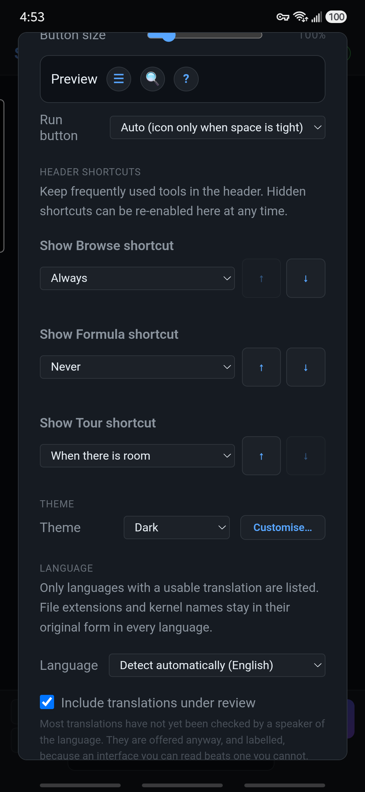
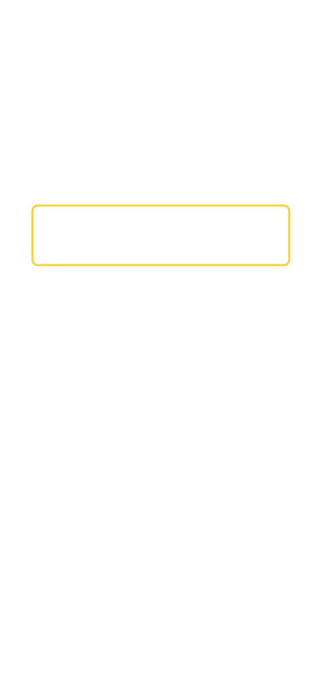
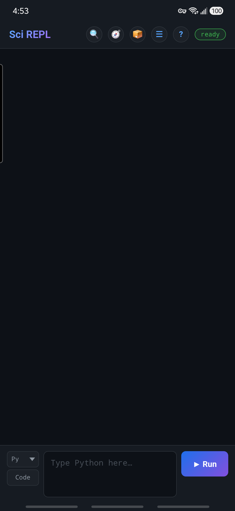
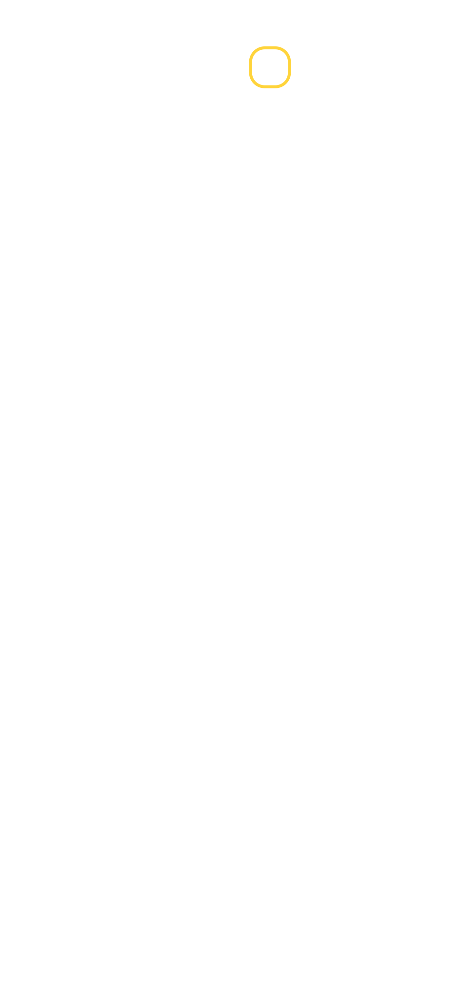
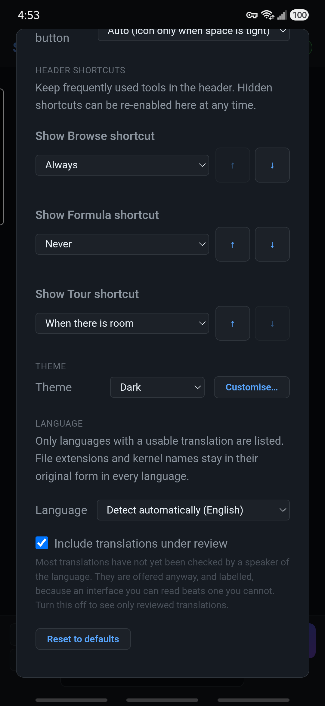
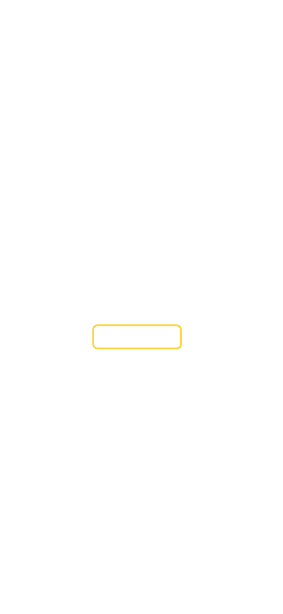

Personalize a interface
Mostrar o Browse e ajustar a Aparência
Coloque o atalho 📦 Browse no cabeçalho do SciREPL Free, depois escolha botões confortáveis e um tema claro ou escuro. Os controles compartilhados de Aparência também são úteis no Pro; uma seção separada exclusiva do Pro aborda edição em tela cheia, teclas extras e cores de sintaxe em tempo real. Você pode fazer isso sem alterar nem executar nenhuma célula da pasta de trabalho.
As cinco capturas de tela são capturas reais de SciREPL Free 1.4.0-debug em um Samsung Galaxy S24+, feitas em . Elas mostram o aplicativo assinado para depuração, não uma instalação da Play Store. As etapas ilustradas usam controles do Free 1.4.0. O atalho de cabeçalho do Browse é exclusivo do Free; usuários do Pro podem abrir o mesmo catálogo a partir do Menu. O texto exclusivo do Pro abaixo é verificado em relação à base de código do Pro 1.4.0; esses controles não são ilustrados por essas imagens do Free, e menus mais antigos podem ser diferentes.
Etapa 1
Abrir Menu → Aparência
- Localize ☰ Menu, o botão de três linhas horizontais no cabeçalho na parte superior do aplicativo.
- Toque nele e escolha 🎨 Aparência. Se o menu for mais alto do que a sua tela, role dentro dele para encontrar a opção.
As alterações entram em vigor assim que você as escolhe. Os controles comuns abaixo não precisam de um botão Salvar ou Aplicar. Fechar a Aparência com × não cancela suas alterações, e suas escolhas são mantidas para a próxima visita ao aplicativo.
Etapa 2
Free 1.4.0: mostrar o atalho do 📦 Browse
Está usando o Pro? Pule esta configuração de atalho e use Menu → Navegar por pacotes, coleções e pastas de trabalho. As próximas seções cobrem os controles compartilhados de Aparência.
- Abra Menu → Aparência e role até Atalhos do cabeçalho.
- Localize Mostrar atalho de Navegar e escolha Sempre.
- Feche a Aparência com ×. O botão 📦 agora está no cabeçalho; toque nele para abrir Navegar por pacotes, coleções e pastas de trabalho.


As opções têm finalidades diferentes:
- Sempre: mantenha o atalho visível, mesmo se o cabeçalho precisar de outra linha.
- Quando houver espaço: o padrão para Navegar. Mostre-o apenas quando couber; uma tela mais estreita, botões maiores ou uma mensagem de status mais longa podem fazê-lo desaparecer.
- Nunca: oculte o atalho do cabeçalho.
Os botões ↑ e ↓ alteram qual atalho opcional cede seu lugar primeiro quando o espaço for reduzido. Mova um atalho para cima para mantê-lo por mais tempo ou para baixo para que desapareça mais cedo. Eles alteram a prioridade, não as posições dos ícones no cabeçalho.


Sem o botão 📦? O caminho pelo Menu ainda funciona quando o atalho está oculto ou sua versão não o oferece. Para um cabeçalho compacto, retorne Navegar para Quando houver espaço em vez de forçar todos os atalhos opcionais a permanecerem visíveis.
Se você veio aqui para encontrar uma pasta de trabalho, agora pode retornar ao passo a passo de Grupos de Markov e pesquisar no catálogo.
Opcional · apenas Pro
Apenas Pro: edição em tela cheia, teclas extras e cores de sintaxe
Estes são controles de editor do SciREPL Pro 1.4.0, não controles exibidos nas capturas de tela do Free acima. Teclas adicionais e cores em tempo real são configurações separadas.
Entrar na edição em tela inteira
- Nova célula: toque no botão ⤢ Tela inteira no campo de código da nova célula. Suas setas diagonais para fora significam expandir o editor.
- Célula salva: toque no ✎ lápis dessa célula para editá-la e, em seguida, toque em ⤢ no canto do campo de código dessa célula.
O editor ocupa a tela para que mais código caiba. Teclas extras ativadas e blocos de sugestão permanecem disponíveis acima do teclado; as cores de sintaxe usam a mesma configuração descrita abaixo. Entrar em tela inteira não executa código.
Toque no rótulo do editor na parte superior para retornar ao caderno com seu rascunho ainda aberto; Voltar ou Esc também sai do modo de tela inteira. Para uma célula salva, Concluir aplica o rascunho sem executá-lo, enquanto Cancelar descarta a edição. Para uma nova célula, Concluído e Cancelar saem da tela inteira sem limpar o rascunho ou criar uma célula; Executar é uma ação separada.
Não é o mesmo que “Painéis usam a tela inteira”. Essa opção separada de Aparência controla a margem superior de painéis e caixas de diálogo; ela não abre o editor de código em tela inteira.
Mostrar a linha de teclas extras
Abra Menu → Autocompletar → Seção → Geral. Defina Teclas extras acima do teclado → Ativado; o padrão é Desativada. A linha oferece Esc, Tab, remoção de recuo, setas, Home, End, Executar e pontuação. Deslize-a para os lados para alcançar as teclas que não cabem. Escolher Ativado não executa código, mas a tecla ▶ Executar da linha executa—revise o código-fonte antes de tocar nela.
Na mesma seção, Chips no modo retrato e Chips no modo paisagem escolhem Linha própria ou Substituir teclas extras. Os padrões são Linha própria em retrato e Substituir teclas extras em paisagem: enquanto as opções aparecem, elas podem ocupar temporariamente o lugar das teclas. Com as teclas extras desativadas, os blocos usam uma linha própria. Linhas adicionais no modo paisagem oferece Desativada, Quando houver espaço (padrão) ou Sempre. Quando houver espaço usa Mínimo de linhas de código visíveis, inicialmente 8, de modo que uma exibição reduzida em paisagem possa ocultar linhas opcionais.
Ativar ou desativar cores de sintaxe em tempo real
Abra Menu → Aparência → Cores de sintaxe ao digitar. Escolha Ativado para colorir códigos compatíveis durante a edição, ou Desativada para texto sem formatação. O padrão, Automático (ativado no computador, desativado no toque), ativa as cores em navegadores para computador e as mantém desativadas em celulares. Se a digitação parecer lenta, escolha Desativado; colorir pode reduzir a velocidade de digitação em dispositivos mais lentos. Códigos com mais de 6000 caracteres permanecem sem cor mesmo com Ativado.
As cores não validam nem executam códigos, não enviam uma solicitação de API nem ativam o preenchimento automático. A alteração dessa configuração entra em vigor imediatamente e não modifica seu código-fonte.
Arquivos e armazenamento tem uma opção separada
Para um arquivo de texto, use Menu → Files & Storage (VFS / Paths), selecione o arquivo e escolha Tela cheia. A caixa de seleção Realce de sintaxe desse editor é independente da configuração de cores em tempo real de Aparência e fica desativada por padrão. Ela fica indisponível para tipos de arquivo não reconhecidos ou arquivos com mais de 100,000 caracteres. Suas teclas extras compartilham a preferência de Preenchimento, mas podem ser ocultadas quando o editor de arquivos tiver espaço insuficiente. A opção Salvar do arquivo grava suas edições; apenas alternar as cores não faz isso.
Passo 4
Escolha o tema claro, escuro ou do sistema
Role até Tema e escolha Escuro, Claro ou Seguir sistema. Escuro é o padrão. Seguir o sistema adota a preferência de tema claro ou escuro do seu dispositivo; é uma escolha que você faz, não o padrão.


Você não precisa de Personalizado, Personalizar…, de um editor de tema em JSON ou de Avançado: CSS personalizado para esta lição. Essas opções avançadas estão fora deste tutorial para iniciantes.
Toques finais opcionais
Espaço no Android e retorno aos padrões
Em Layout, deixe Margem superior → Automático selecionado. Ele segue a área segura informada pelo dispositivo para que o cabeçalho tenha o espaçamento adequado acima dele; você não precisa adivinhar um valor de pixel.
No aplicativo Android, Ocultar a barra de status do Android oferece:
- Nunca: o padrão; mantém visíveis o relógio e a barra de status de notificações.
- Em paisagem: oculta essa barra enquanto o telefone estiver na horizontal; restaura-a em modo retrato.
- Sempre: oculta-a em ambas as orientações.
Esta configuração afeta apenas a barra de status do Android, não a barra de navegação ou de gestos. Ela está ausente do navegador/PWA e da interface do Windows. Em vez disso, o Pro 1.3.0 possui uma caixa de seleção chamada Hide Android status bar in landscape.
Deseja desfazer as alterações de aparência? Restaurar padrões restaura o tema padrão, o tamanho do botão do cabeçalho, a margem superior, os atalhos e a preferência da barra de status, além de remover opções personalizadas de tema/CSS. Isso não apaga as células da sua pasta de trabalho. Ele não redefine as preferências separadas do botão Executar ou do idioma da interface; escolha você mesmo a opção Automático de Executar, se necessário.
Feche Aparência com × quando terminar. Continue com o tutorial da pasta de trabalho Markov Groups ou retorne à referência concisa da interface (Página de referência em inglês).